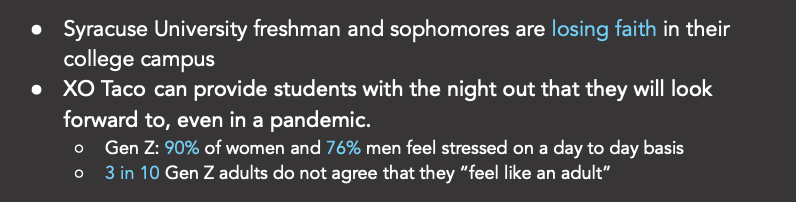
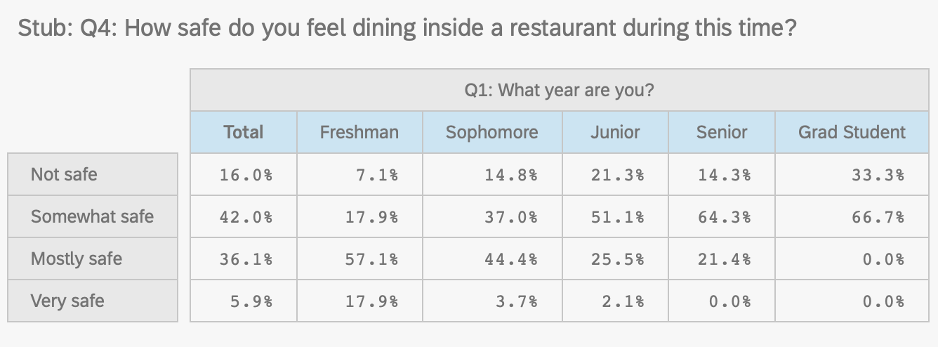
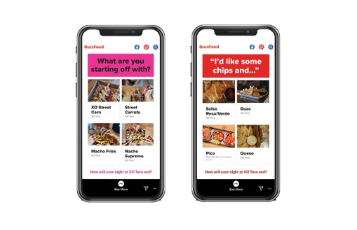
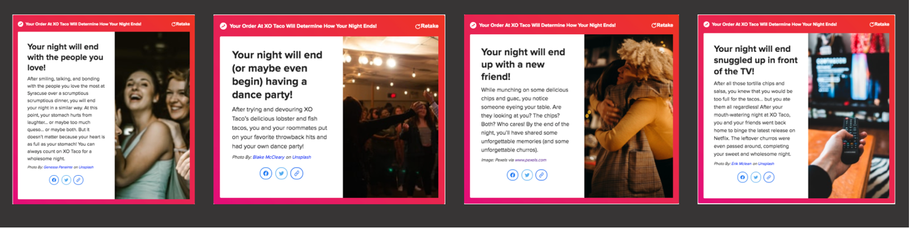

During the fall of 2020, the client my team worked on was XO Taco. The client’s goals were to increase brand consideration of XO Taco for freshman and sophomore college students and focus on an advertising campaign that did not relate to the COVID-19 pandemic.
The insight my strategy team discovered through our research was that Syracuse University freshman and sophomore students were losing faith in their college campus and XO Taco can provide students with the night out they will look forward to, even in a pandemic.
We came to this conclusion by examining Mintel Reports, which showed us that Gen Z adults do not feel like an adult, and they feel stressed out on a day to day basis. We also conducted our own survey of the Syracuse University student body, which showed us that despite the pandemic, college freshman and sophomores did not let the pandemic stop them from eating out at restaurants.
This research led to this creative execution that was developed by the creative team on the account. This was utilized by XO Taco’s marketing team. The execution is a Buzzfeed Quiz that tells the user what night they will have based on their XO Taco order.
A person would receive one of these outcomes after taking the Buzzfeed Quiz.